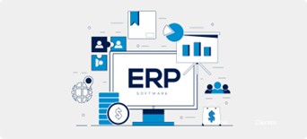

Introducción a los ERP
Actividad teórica
- Dar respuestas a las preguntas:
-
¿Qué es un ERP?
El Sistema ERP (Planificación de recursos de la empresa) es un conjunto de aplicaciones de software integradas que ayudan a administrar diversas funciones comerciales como contabilidad, recursos humanos, ventas, producción, entre otros. Centraliza la información, mejora la eficiencia, la precisión y la toma de decisiones.
 -
¿Para qué sirve?
El ERP sirve para integrar todos los procesos y áreas funcionales de una empresa en una sola plataforma para:
- Mejorar la eficiencia operativa.
- Reducir costos.
- Facilitar la cooperación entre departamentos.
- Proporcionar datos precisos y actualizados para una mejor toma de decisiones.
-
¿Qué funciones realizan?
Las funciones principales del ERP incluyen:
- Gestión financiera.
- Gestión de inventario.
- Gestión de ventas.
- Gestión de recursos humanos.
- Gestión de producción.
- Gestión de compras.
- CRM (Gestión de relaciones con el cliente).
-
¿Qué tipos de módulos hay? ¿Cómo los clasificarías? ¿Puedo instalar cualquier módulo?
Tipos de módulos:
- Módulos financieros: contabilidad, tesorería, estados financieros.
- Módulos de recursos humanos: gestión de personal, control de tiempo, reclutamiento.
- Módulos de producción: planificación, control de calidad.
- Módulos de ventas y CRM: marketing, atención al cliente.
- Módulos de compra y logística: almacén, gestión de proveedores.
Instalación: Depende del ERP. Algunos permiten añadir módulos fácilmente (como Odoo) y otros requieren configuración o licencias adicionales.
-
¿Qué es la integración de módulos y por qué es beneficiosa?
La integración modular permite que los módulos del ERP compartan información de forma consistente, reduciendo errores y evitando la duplicación de datos.
Beneficios:
- Mejora la eficiencia operativa.
- Ofrece una visión integral de la empresa.
- Facilita la toma de decisiones informadas.
- Comparación de ERPs.
Investigación sobre productos ERP diversos y comparativa:
| ERP | Funciones | Requisitos | Mercado Objetivo | Licencia y Precio |
|---|---|---|---|---|
| SAP | ERP completo, análisis avanzados, disponible en la nube. | Infraestructura IT avanzada y personal especializado. | Grandes empresas (industria, automotriz, energía, finanzas). | Suscripción o perpetua. Coste elevado y negociable. |
| Microsoft Dynamics NAV | ERP modular, buena integración con Microsoft. | Infraestructura estándar, conocimientos de Microsoft. | Empresas medianas y grandes (comercio, manufactura). | Suscripción anual. Coste accesible. |
| Odoo | ERP modular, flexible, código abierto. | Infraestructura básica, fácil de implementar. | Pequeñas empresas con presupuesto ajustado. | Versión básica gratuita y versión empresarial económica. |